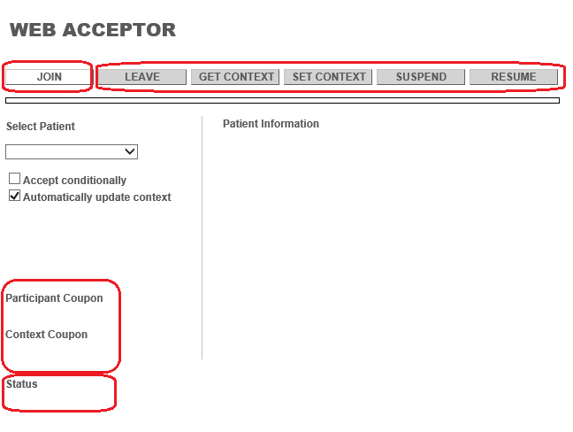
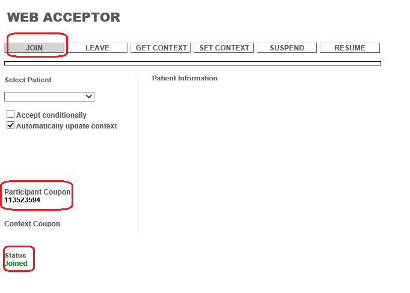
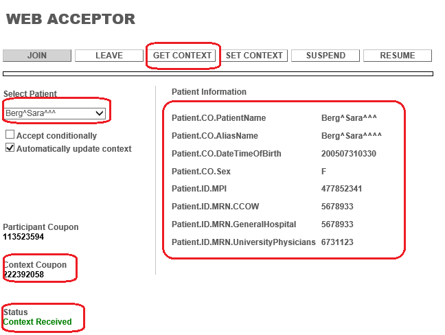
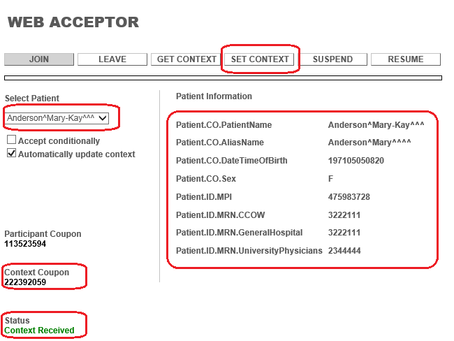
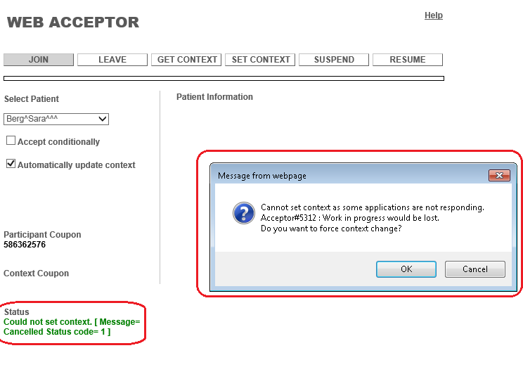
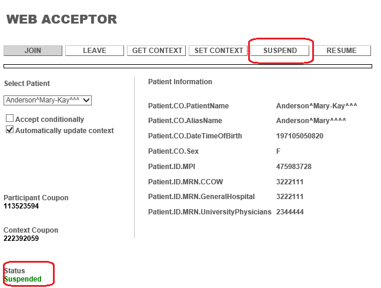
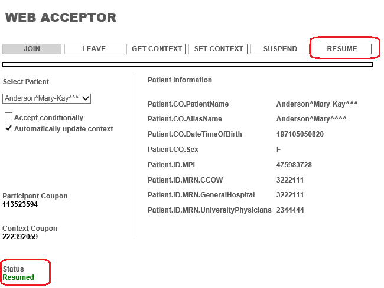
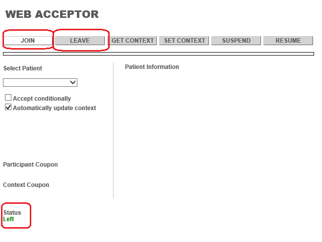
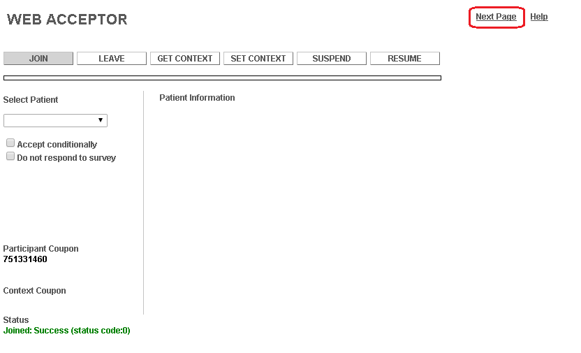
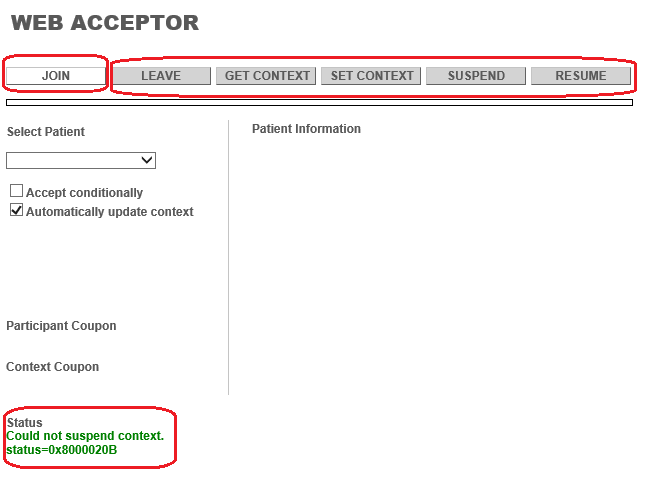

WebAcceptor Help
Prerequisites:
Before running the application, the Vault name or IP has to be set in the html page for the sample web app where the IContextor.js file is included.
Open the WebAcceptor.html in any text Editor (eg. notepad). In the html you will find a tag <script type="text/javaScript" src="http(s)://insert_name_or_ip/websdk/IContextor.js">. Add name or IP in src.
This is an help document which will guide the user with the following mentioned operations viz. Join, Get Context, Set Context, Suspend Context, Resume Context, Leave Context. The detailed information is provided below.
WebAcceptor Dashboard
This is the landing page with the Join option enabled to join to the Context. There is an activity indicator below the buttons which will indicate the status for the current activity.

Join Common Context
- Join button is used to participate in the context.
- Once the join is clicked, on the successful response the Status section will update as Status: Joined and returns a participant coupon displayed under Participant Coupon as shown below.
- Once joined successfully join button will be disabled as shown and all other buttons will be enabled.
- If it fails there will be a message with the error description and error code and the buttons will remain disabled.

Get Context
- On click of the Get Context we get the current context coupon and the patient information as shown below.
- Patient Information table shows only available information set in the context.
- If there is a failure there will be a message with the error description and error code.

Set Context
- On click of Set Context the user is allowed to set the patient information from the patient drop down.
- If there is no response from the other participating application within allotted time then a message is shown as Cannot set context as some applications did not accept the context change. In this case context change will be cancelled.
- If another application can accept the context change conditionally then a message is shown as Cannot set context as some applications are not responding. Do you want to force context change? with two option OK|Cancel as shown below. On click of OK button an attempt will be made to enforce context change. If successful, success message is shown. If user selects Cancel, context change will be cancelled.
- If there is a failure there will be a message with the error description and error code.


Suspend Context
- On click of suspend the user suspend the context, the Status section will update as Status: Suspended indicating no active participation in the context.
- If there is a failure there will be a message with the error description and error code.

Resume Context
- On click of resume the user will resume the previously suspended context and the Status section will update as Status: Resumed
- If there is a failure there will be a message with the error description and error code.

Leave Context
- On click of leave, application will be removed from the context and the Status section will update as Status: Left

Next Page
- A link is provided as shown in the below example to navigate between application pages.

Error Case
- If any of the above operation fails the a respective error code is displayed with corresponding message.
- If there is a failure there will be a message with the error description and error code and Join button will remain disabled except if the participant is unknown and will allow user to join again.
